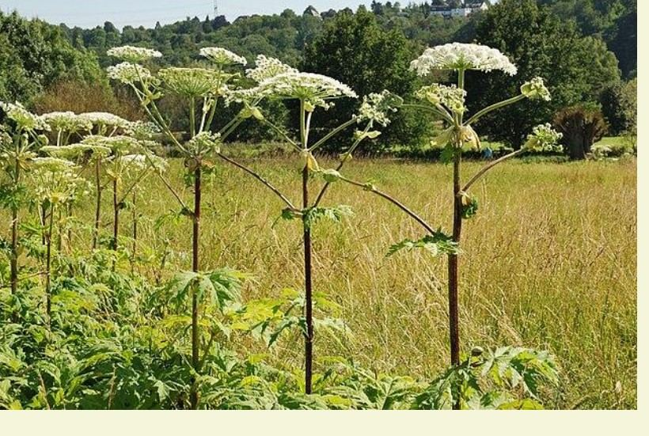
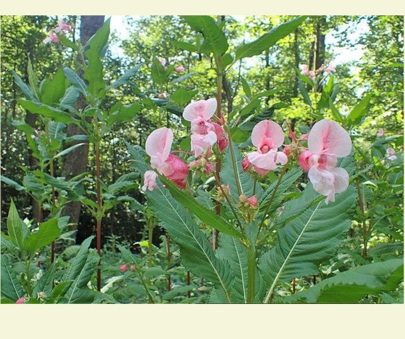
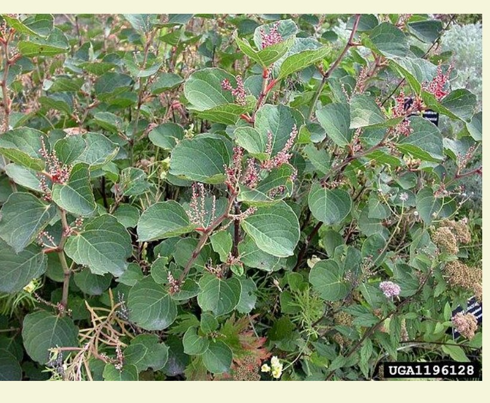
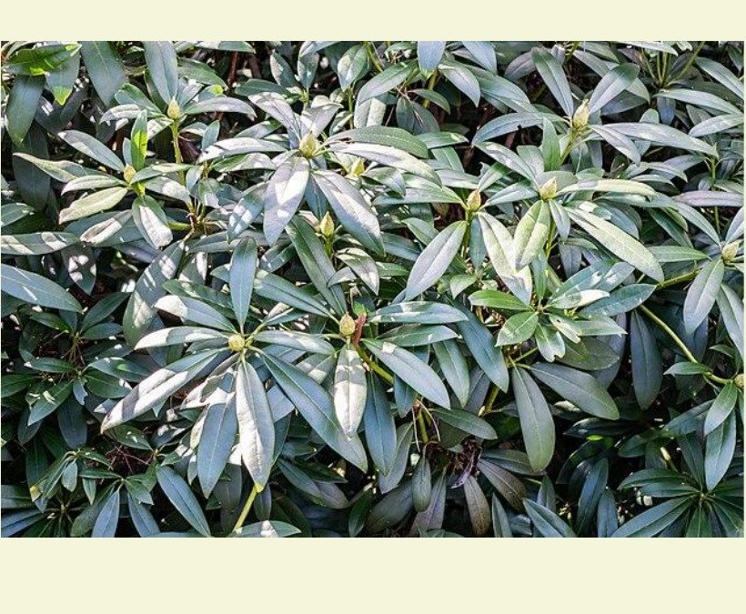

Invasive Weed Removal in Kent: Giant Hogweed, Himalayan Balsam and Other Invasive Plants
Invasive non-native plants are a growing problem on commercial land across Kent, especially beside rivers, railway lines and on neglected ground. Some damage surfaces and structures, some are a direct health risk to staff and the public, and all of them are covered by specific laws on spread and disposal. This guide covers the main invasive plants found on Kent sites, what the law says and how professional treatment works. For Japanese knotweed, see our dedicated Japanese knotweed removal guide.
⚠️ Found invasive weeds on your site? Weed Control Kent provides invasive weed surveys and treatment across Kent and Medway. PA1, PA6A & PA6AW certified, BALI accredited, fully insured. Request a free site survey →
Invasive Plants Commonly Found on Kent Sites

Giant Hogweed
Giant hogweed (Heracleum mantegazzianum) grows along river corridors and on neglected land, and can reach several metres tall. Its sap makes skin extremely sensitive to sunlight, causing severe burns and blistering that can leave long-term scarring. It should never be cut or strimmed without the right protective equipment. On a site used by staff, contractors or the public, it is a health and safety risk that needs dealing with promptly.
Treatment is usually a herbicide programme, starting in spring while plants are small and before they flower. Each plant produces large numbers of seeds that stay viable in the soil for several years, so follow-up visits are needed to catch new seedlings.

Himalayan Balsam
Himalayan balsam (Impatiens glandulifera) is an annual plant of riverbanks and damp ground. Its seed pods fire seeds several metres, and seeds carried downstream start new stands. Dense growth shades out native plants, then dies back in winter and leaves banks bare and prone to erosion.
Because it has shallow roots and lives for one season, smaller stands can be pulled or cut before they set seed, usually in early summer. Larger stands can be treated with herbicide, but most balsam grows beside water, so this needs PA6AW-certified operatives, products approved for use near water and agreement from the Environment Agency. Control is repeated each year until the seed bank is used up.

Japanese Knotweed
Japanese knotweed is the best-known invasive plant in the UK. It spreads through underground rhizomes and can regrow from small fragments, so digging, cutting or strimming it often makes the problem worse. It can affect property sales and mortgage lending, and treatment usually runs over several years. Our Japanese knotweed removal guide covers identification, the law, treatment and property transactions in detail.

Rhododendron Ponticum
Common on larger estates, golf courses and landscaped grounds, Rhododendron ponticum forms dense thickets that shade out native plants and stop natural regeneration. Management usually combines cutting with targeted herbicide treatment by certified operatives.
What the Law Says About Invasive Plants
Wildlife and Countryside Act 1981
Japanese knotweed, giant hogweed, Himalayan balsam and Rhododendron ponticum are listed in Schedule 9. It is not an offence to have them on your land, but it is an offence to plant them or otherwise cause them to grow in the wild. Cutting, strimming or moving contaminated soil can do exactly that.
Invasive Alien Species (Enforcement and Permitting) Order 2019
Giant hogweed and Himalayan balsam are also listed as species of special concern under this order, which restricts keeping, growing and releasing them. Japanese knotweed is not on that list.
Environmental Protection Act 1990
Japanese knotweed and giant hogweed waste, including contaminated soil, is controlled waste. It must be removed by a registered waste carrier and taken to a licensed site, not put in a general skip.
Community protection notices and neighbours
Councils and the police can issue community protection notices under the Anti-social Behaviour, Crime and Policing Act 2014 where invasive plants are having a detrimental effect on the community. If invasive plants spread onto neighbouring land, the owner can also face a civil claim.
Why DIY Treatment Often Fails
- Cutting spreads the problem. Knotweed regrows from fragments, and cutting hogweed exposes whoever does it to the sap.
- Seed banks. Hogweed and balsam leave seed in the soil, so a single treatment rarely ends the problem.
- Certificates and permissions. Professional herbicides must be applied by operatives holding PA1 and the right PA6 certificate, and work near water needs Environment Agency agreement.
- Disposal. Invasive plant waste has to go to a licensed site, and you remain responsible for it.
If an invasive plant problem gets worse or spreads because it was not properly managed, your insurer may take the view that you did not take reasonable steps. A documented treatment programme by certified specialists shows due diligence.
How Professional Invasive Weed Treatment Works
Stage 1: Site survey and identification
A survey identifies every invasive species present, maps how far it has spread and notes how close it is to buildings, drainage, watercourses and boundaries. This forms the basis of the treatment plan and records the starting position.
Stage 2: Treatment plan
A written plan sets out the products and method, the timing for each species, any Environment Agency agreement needed for work near water, and how waste will be handled.
Stage 3: Treatment
Herbicide is applied by operatives holding PA1, with PA6A for land and PA6AW for work in or near water. All Weed Control Kent operatives hold all three.
Stage 4: Monitoring and follow-up
Invasive plants come back from seed or root, so programmes run over more than one season. A written record is kept for every visit.
Stage 5: Completion records
At the end of the programme you receive the full treatment records, which are useful for property transactions, insurers and planning.
Treating Invasive Plants Near Water
Giant hogweed, Himalayan balsam and Japanese knotweed all commonly grow on riverbanks, ditches and drainage channels in Kent. Using herbicide in or near water needs:
- PA6AW-certified operatives
- Products approved for use in or near water
- Agreement from the Environment Agency before work starts
Using a contractor without these on a watercourse on your land can expose you, as the landowner, to enforcement action.
Frequently Asked Questions
Is giant hogweed dangerous?
Yes. Its sap makes skin highly sensitive to sunlight and can cause severe burns and blisters. Do not touch, cut or strim it. If sap gets on your skin, wash it off, keep the area out of sunlight and seek medical advice.
When is the best time to treat Himalayan balsam?
Before it sets seed, usually from late spring to mid-summer. Pulling or cutting works for smaller stands. Larger stands near water can be treated with herbicide under an Environment Agency agreement.
How long does invasive weed treatment take?
It depends on the species. Balsam and hogweed need repeat visits until the seed bank in the soil is used up, and Japanese knotweed programmes usually run over several years.
Do you treat Japanese knotweed?
Yes. Our Japanese knotweed removal guide explains how treatment works, what the law says and what it means for property sales.
Is invasive weed treatment covered by insurance?
Standard commercial property insurance does not usually cover treating invasive plants already on your land. If they have spread from neighbouring land, you may have a claim against that owner. Some specialist environmental policies include cover, so check with your broker.
Professional Invasive Weed Removal Across Kent & Medway
Weed Control Kent, a service of BALI accredited Roundwood Solutions Ltd, provides invasive weed surveys, treatment programmes and full records for commercial properties across Kent. Our PA1, PA6A and PA6AW certified operatives treat giant hogweed, Himalayan balsam, Japanese knotweed and other invasive plants.
We cover all of Kent including Medway, Maidstone, Dartford, Gravesend, Canterbury, Ashford, Tonbridge, and surrounding areas.
Or call 07545 642021 to discuss your requirements.